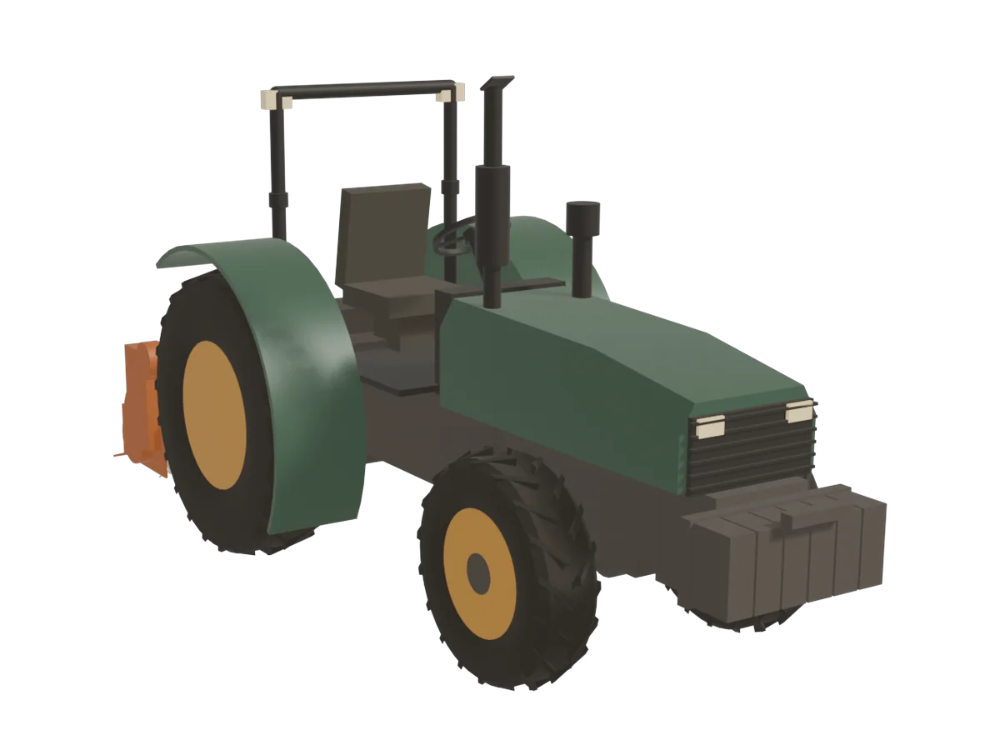

Ingegneria delle produzioni viticole · simulazione integrata
Il trattore in campo, in 3D
Una simulazione unica che mette in scena tutta la teoria delle due dispense: il trattore affronta pianura, salita, curva e lavorazione sotto sforzo. Ruota la vista, segui la timeline e osserva le forze comparire nel punto e nel momento in cui agiscono davvero.
- Ruota la vistaTrascina dentro la scena per cambiare il punto di vista, in qualunque direzione.
- Avvia il giro di lavoroCon Play parte il ciclo completo: a ogni fase compare la forza o la formula in gioco.
- Cambia lo scenarioPendenza, terreno, peso e coppia aggiornano scena e formule in tempo reale.

01 · Simulazione
Simulazione
Pianura, salita, curva in pendenza e lavorazione con presa di potenza, in un unico giro di circa 34 secondi.
02 · Scenario
Scenario e grandezze
Ogni cursore ricalcola le nove grandezze a destra e i valori che compaiono nella scena.
Scenario
Trazione
Potenze
Stabilità
Le nove grandezze restano sempre visibili e si aggiornano con lo scenario. Il pannello delle formule nella scena richiama la stessa formula, con lo stesso valore, mentre il trattore sta vivendo quella condizione.
03 · Motore 3D
Il motore diesel, pezzo per pezzo
Monocilindro a quattro tempi in sezione, con valvole in testa comandate da aste e bilancieri. Guarda il ciclo completo, apri la vista esplosa e tocca un pezzo per sapere a cosa serve. Il ciclo a quattro tempi, scorrendo →

04 · Teoria
Indice della teoria richiamata in scena
Le formule delle dispense, nell'ordine in cui compaiono durante il giro di lavoro.
Potenza di trazione
La potenza utile è il prodotto tra forza utile di trazione e velocità di avanzamento; richiamata nella fase di avvicinamento e salita.
Rendimento e potenza nominale
La potenza erogata dal motore è maggiore di quella utile per il rendimento di trazione, e la nominale è ulteriormente maggiorata per il regime continuativo del 75%.
Potenza rotatoria alla p.d.p.
Coppia per velocità angolare: richiamata quando il trattore aziona un attrezzo tramite la presa di potenza.
Forza di aderenza
Il prodotto tra peso aderente e coefficiente di aderenza, che cambia con terreno e organo di contatto (ruote/cingoli). Il peso in daN vale P in kg × 0,981; su un pendio conta solo la sua parte perpendicolare al terreno, P · cos α.
Resistenza all'avanzamento e pendenza
Le forze che si oppongono al moto: il rotolamento, con Cra che dipende da terreno e organo di contatto, e la pendenza da superare in salita. Il rotolamento dipende dal peso perpendicolare al terreno, P · cos α; la componente del peso lungo il pendio vale P · sin α, con α = arctan i. Solo per pendenze piccole cos α ≈ 1 e sin α ≈ i.
Forza utile di trazione
Ciò che resta della forza di aderenza dopo le resistenze: se scende a zero il trattore non avanza più, indipendentemente dalla potenza del motore.
Stabilità trasversale
Il ribaltamento laterale dipende dalla geometria (carreggiata e baricentro) e, in curva, dalla velocità rispetto al raggio percorso. Il trattore è stabile se valgono entrambe le condizioni.
Stabilità longitudinale
Sotto sforzo, la coppia alle ruote motrici (al massimo Fa × raggio ruota) tende a sollevare l'avantreno. Deve restare inferiore al momento del peso, che in salita si riduce, più quello della zavorra anteriore.
Legenda dei simboli
Tutte le lettere usate nella simulazione, nelle card e nelle formule, con unità di misura e valori del trattore modellato.
Aderenza e resistenze
- Peso del trattore con zavorrakg
- Peso in daN: G = P · 0,981daN
- Forza di aderenzadaN
- Resistenze all'avanzamento (rotolamento e pendenza)daN
- Forza utile di trazionedaN
- Coefficiente di aderenzaadimensionale
- Coefficiente di resistenza al rotolamentoadimensionale
- Pendenza del campo, i = tan α%
- Angolo del pendio, α = arctan i; P · cos α è il peso perpendicolare al terreno, P · sin α quello lungo il pendio°
Potenze
- Velocità di avanzamentokm/h
- Potenza utile di trazionekW
- Rendimento di trazioneadimensionale
- Potenza erogata dal motorekW
- Potenza nominale (regime continuativo al 75%)kW
- Coppia alla presa di potenzaN·m
- Velocità angolare della p.d.p.: 540 giri/min56,5 rad/s
- Potenza alla presa di potenzakW
Stabilità
- Carreggiata1,5 m
- Altezza del baricentro0,95 m
- Pendenza trasversale massima%
- Raggio di curvam
- Accelerazione di gravità9,81 m/s²
- Velocità critica in curvakm/h
- Raggio sotto carico delle ruote posteriori0,725 m
- Distanza fra baricentro e asse posteriore0,84 m
- Braccio del peso in salita: d′ = d · cos α − h · sin αm
- Momento di impennamento: Mp = Fa · rpdaN·m
- Momento della zavorra anteriore (150 kg a 2,65 m)390 daN·m